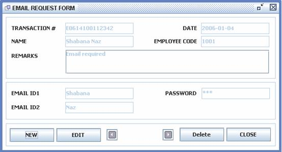
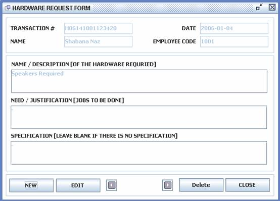
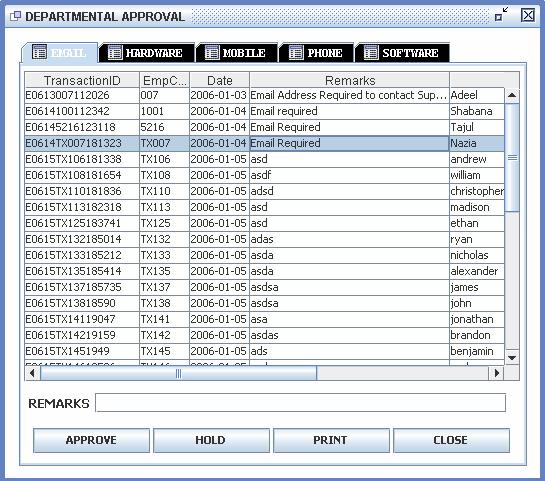
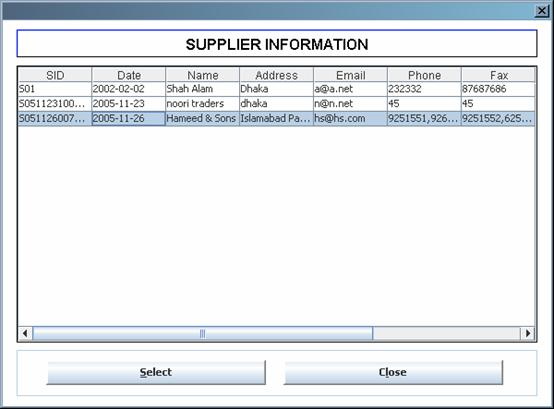
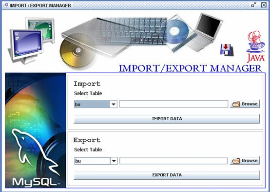

There are
two versions of the software Client version and Server version. At the server
side, the server must be running at the server end so that all the clients
could have access to the database.
The four
Modules of the system are as follows
Request Management
Hardware Inventory
Mobile Inventory
Mobile Billing
Additionally
there are some maintenance utilities available in the system, which are as
follows
Database Manager
Query Processor
Import / Export Manager
User Manager
These
utilities and Reports are available on the Server side only.
At the
server first start the Server by clicking StartServer.bat
file in the installed directory of the software or from Start menu, Support
Software System, click Start Server Option, you will see the following screen
[figure 9.1].
Figure 9.1
Once the
Server is successfully ready, you see Server Ready as you can see in the above
picture, only then all clients can have access to the database.
If you don’t
see the above screen, following cases can occur;
Case 1: If you see the message Connection
Error [figure 9.2]
Figure 9.2
You did not
make any ODBC on server. Check the implementation section for details about how
to setup ODBC.
Case 2: if and of the class is missing that you will get NoClassDefFoundError. You will see a screen
similar [figure 9.3].
Figure 9.3
In this
case, reinstall the server version once again.
Case 3: If the Java is not properly setup or
any conflict with the version or problems with RMI, then you will see Server
Not Ready message [figure 9.4] then the clients can not have access to the
database.
Figure 9.4
In this case
you need to reinstall the proper Java version delivered with the software
provided.
If
everything goes ok start the software. Go to Start Menu, Support Software
System, and click Support Software System to run the software. Another way to
run the system is from the installed directory of the software, run the BTSSS-Server.bat file to run the Server
version of the software and on the client run the BTSSS-Client.bat file to run the Client version of the software.
You will see the Splash Screen [figure 9.5].
Figure 9.5
After this
screen you will see a dialog [figure 9.6] asking for server name.
Figure 9.6
At server
end type localhost and press OK button [figure 9.7].
Figure 9.7
At the
client side type the Server’s IP Address or Server Name and press ok.
After this
you will see login dialog [figure 9.8].
Figure 9.8
Provide your
EmpCode and password to login the sytem.
After
successful login you will notice that on server end there are more features
provided and on the client end there are less features provided. Server version
[figure 9.9] includes Reports Menu and Maintenance Menu which are not available
on Client side as well as some buttons on the toolbar.
On Client
side [figure 9.10] the users will only be inserting and updating data. We will
start with Client version first.

Figure 9.9
[Server Version]
Figure 9.10
[Client Version]
1. File Menu
File menu
[figure 9.11] includes general options e.g. locking application, changing
password, log off and Exit.
Figure 9.11
1.a. Lock Application
This option
locks the entire screen [figure 9.12] so that no other user can interfere with
the system. Can be used when a user is shortly not available and the system
needs to be running.
Figure 9.12
1.b. Change Password
Whenever any
user wanted to change his/her password this option is there to do the job
[figure 9.13].
Figure 9.13
1.c. Log Off
This option
will log off the current user and display the login screen [figure 9.8]. Can be
used while switching users.
1.d. Exit
Closes all
connections and exits the system.
2. Request Menu
Request menu
includes Request Management Module, you can see [figure 9.14] and [figure 9.15]
there are two sub menus. New Item and Approval.
Figure 9.14
Figure 9.15
New Item
contains the user part, when any user wants to place a new request for a new
item [e.g. Email, Hardware, Phone, Mobile, and Software] or repair he will be
using new item’s menu.
2.1.a Email
Whenever any
user wanted to place an Email request, this option will be used the form will
be like [figure 9.16]. Press New
button and provide the required information and press Save Button you will see a progress bar [figure 9.17] and a
conformation message [figure 9.18] if the data is successfully added in
database. On the other hand existing request can be updated as well, Press the
navigation buttons on the form to navigate through the submitted requests and
click Edit button to edit the
current selected request and the press Save
button to update the request, you will see a progress bar [figure 9.19] and
conformation message [figure 9.20]. Similarly existing requests can be deleted
as well. See [figure 9.21 and figure 9.22 and figure 9.23].

Figure 9.16
Figure 9.17
[Being Displayed in almost all the forms]
Figure 9.18
[used in almost all the forms]
Figure 9.19
[Being Displayed in almost all the forms]
Figure 9.20
[Being Displayed in almost all the forms]
Figure 9.21
[Being Displayed in almost all the forms]
Figure 9.22
[Being Displayed in almost all the forms]

Figure 9.23
While
deleting record, the system takes the conformation from the user [figure 9.21]
and if the user press Yes button
then the record is deleted otherwise not deleted.
2.1.b Hardware
Whenever any
user will require and hardware, hardware form [figure 9.24] will be used to
submit the request. Hardware form includes Description / Need / Specification
of the hardware required.

Figure 9.24
2.1.c Mobile
In case of
new Mobile requirement the user will need to submit a request using mobile
request form [figure 9.25]. Mobile form includes 14 short questions which are
required for the management. Every question’s answer must be provided.
Figure 9.25
2.1.e Phone
In case of
new Telephone set, PABX Extension, Mobile set the user will need to submit a
request using Phone Request form [figure 9.26].
Figure 9.26
2.1.d Software
In case of
new software / report required by the user, the Software request form [figure
9.27] will be used.
Figure 9.27
2.2.a Department Head
After the
user has placed its request, it needs to be approved by the departmental heads.
The department heads will login the system to approve their department’s
requests from the Departmental Approval form [figure 9.28]. Select the request
from the list and press Approve
button to approve request.

Figure 9.28
The is a
remarks field as well if the department head wants to add some remarks with the
current request. And on the other hand the head can hold the request as well.
2.2.b IS Head
Once the
requests are approved by the departmental heads, it requires final approval by
the IS Head. IS Head will login the system and similar to the department head,
IS head can Approve / Hold any request [Figure 9.29].
Figure 9.29
3. Jobs Menu
Jobs menu
includes the final phase of the Request Management Cycle [figure 9.30]. Once
the request has been submitted and approved by the departmental heads and IS
head, it becomes a job for the IT staff. In the Jobs menu there are 5 different
queues according the sections in the IT department. When the IT department’s
particular section’s staff will login and open their Jobs menu they will get
the approved requests waiting for them to process. Hardware section will get
hardware related requests; software section will get software related. All of
the forms are of the same design but having different data [figure 9.31].
The user
will select a particular request from the list and press the Select button, fields will be enabled
and then the user will put the appropriate data in the fields and press Save button, Edit & Delete options
are also available.
Figure 9.30
Figure 9.31
4. Inventory Menu
Inventory
menu contains remaining three modules, Hardware & Mobile Inventories, and
Mobile Billing. Hardware inventory [figure 9.32] includes Purchase Orders,
Suppliers and their Payments, Indents, Stock Management, Issue, and hardware
User Registration.
On the other
hand Mobile inventory [figure 9.33] does not have any purchase orders or
suppliers; it just deals with stock and issue of the stock. Mobile billing is
also added under Mobile inventory menu because of the user requirements, which
includes Mobile & T&T Billing and Mobile Budget.
Figure 9.32
Figure 9.33
4.1.a Purchase Orders
Whenever a
purchase order is to be placed, the user will login the system and open the
purchase order form. Form can be seen in figure 9.34. First of all the user
will select the supplier by pressing the button next to supplier field. A list
will be displayed [figure 9.35] showing all the suppliers. Select one of the suppliers from the list and
press Select button. After that next entry required is the Offer number,
which will be on the price list of the supplier. Then the required hardware
details are to be placed in the required fields.
For date
selection there a date selector made in the system see figure 9.36. Once you
have provided all the information in the required fields, press Save button to add the record in the
database, when you will press Save button the system will ask “Do you want to END the Current ORDER?”
[figure 9.37], if you have more items to be added in the purchase order then
press No, otherwise press YES button.
Figure 9.34

Figure 9.35
[Being Displayed in some forms where IDs are to be selected]
Figure 9.36
[Being
Displayed in almost all the forms where dates are to be selected]
Figure 9.37
Once you
have placed the PO successfully, when the items will be supplied by the
supplier, then the receive side of the PO is to be updated. You can use the
Search Option to search the particular Order ID and the items in the order will
be displayed in the table [figure 9.38]. While searching you will see figure
9.38. Select the particular item that you want to update and provide quantity
received in the field. The database will be updated.
Figure 9.38
Figure 9.38
[Being Displayed in almost all the forms with Search Option]
When a
purchase order is placed, modified or deleted, the total amount of the PO is
automatically added in the supplier payments section against the selected
supplier. The user doesn’t need to add the payment details of a particular PO
in the payment side, but the user is able to modify payments in the payment
section.
4.1.b Suppliers
Adding new
supplier details will be done using supplier form, which includes necessary
information required by the company about suppliers. Supplier records can be
edited and deleted as well. Although there is a search option as well to make a
particular query about any supplier.
Figure 9.39
4.1.c Suppliers Payments
When a PO is
placed, the total amount against the PO is placed in the Supplier Payment
section automatically, still to make it more flexible the user is given an
option to modify, add, delete supplier payments in the payment section using
supplier payments form [figure 9.40] with search facility as well.
Figure 9.40
4.1.d Indents
Whenever a
PO is placed, the amount required to purchase the items is calculated, and the
Purchase Officer will request the accounts department for that particular
amount, to do this job the indents form is there [figure 9.41]. The purchase officer will Raise the Indent first
[figure 9.42]. When the purchase officer will receive the amount from accounts
department then he/she will finish the indent by giving the remaining details
in the Receive side [figure 9.42]. Indents can be searched and the user can
navigate through the records to modify a particular indent.
An indent
can be canceled as well after raising from Receive side, if the request is
rejected or denied by the higher management. In that case remarks will be
provided.
Figure 9.41
Figure 9.42
4.1.e Stock Management
When the
items will be received by the supplier, the stock is to be updated. Those items
will be entered in the stock. There are different categories of the items and
according to the category different information is required. So the first field
at the Stock Management form [figure 9.43] is item. When the user will select
an item according to the item, the fields will be displayed to get the
necessary information. All of the items will be entered in the stock and
initially for the new items, Quality
will be New and Issued will be No. Items
can be searched as well there are few options available for search by type.
This form
might take few seconds to appear because of having too many records in the
stock.
Figure 9.43
4.1.f Issue Hardware
When the new
supplied items are successfully entered in the stock, those items can be issued
to the users. To issue a particular hardware, the issue hardware form [figure
9.44] will be used. First of all the hardware will be selected from the combo,
after that press the button besides combo box to list the available items in
the stock of the selected hardware. The list will be displayed [figure 9.35]
with the stock which is not issued. Selected one item from the list and press Select button. After that select the
person to whom the hardware is being issued, press the button next to issued to
field, the employee list will be displayed [figure 9.35].
Besides
issuing the issued items records can be modified and deleted as well from this
form. Once the record is deleted, the item’s status is automatically changed to
Not Issued. And while updating if the user changed the previously issued
hardware and issued new hardware then both item’s status is changed
automatically. Searching facilities are also provided. Record navigation is
also provided.
Figure 9.44
In case of
hardware issue, the history table for hardware is automatically updated as
well. While issuing, updating one record is inserted in the history table as a
log of the issues being done.
4.1.g Register User
When a user
is issued a new computer unit, that user is registered in the system first.
User registration [figure 9.45] involves the information about the pc that is
being issued to the user. e.g. BIOS password, IP Address of the computer,
network Id computer name and some other information.
Data
modification, deleting and searching can also be done using this form. Search
by IP Address, Network ID, Domain and some other types are there which makes it
easier to locate, who is using which one. Record navigation is also provided.
Figure 9.45
4.2.a Mobile Phone Stock
Similar to
the hardware stock there is another stock that deals mobile phones [figure
9.46]. As mobile phones have same type of information, the fields required for
this stock are not much. Data will be entered in the required fields and
similar to the other forms, the data can be updated and deleted as well.
Search
options include search by set name, set brand model number etc etc. Record
navigation is also provided.

Figure 9.46
4.2.b SIM Stock
Similar to
other stocks, there is Mobile SIM Stock, SIM stock is kept separate because the
information required for keeping SIM records and information required for
keeping Mobile Phone Records are totally different. Therefore it is kept
separate. Which makes the system faster as well.
Details for
the new SIMs and connections are stored using Mobile SIM Stock form [figure
9.47]. SIM Stock requires information about the connection in detail. Records
can be inserted, updated and deleted as well as Search options are also
provided to make it more flexible for the user. Record navigation is also
provided.
Figure 9.47
4.2.c Issue
Mobile issue
is different then hardware issue, it involves data from two stocks, phone stock
and SIM stock. Whenever a mobile or SIM is to be issued to a user Mobile Issue
form [figure 9.48] will be used.
While
issuing the issue type is to be selected, there are three cases; the user can
be issued a mobile only, a SIM only and both at the same time. Issue type will
be selected accordingly. Another case may be that the user is not issued a
mobile phone hand set, he/she has its own handset. In this case the handset
owner option will be set. In case that the company is providing the handset
then the user has to return the handset too on the selected return date.
Date
insertion, update and deletion can be performed. Advance search options with
the phone numbers handset names and some other options requested by the user
are available for searching. Record navigation is also provided.
Figure 9.48
4.2.d Mobile Billing
Last Module
involves mobile billing [figure 9.49]. When the bills are received by the
company, they are to be entered in the database according to the mobile number
and employee code. First thing to do is select the employee from the employee
list, press the button besides employee code’s field. After that the connection
provider will be selected. There are only two providers present at the moment.
Year and Month will be selected and after that the bill amount will be entered.
When the amount will be entered the balance will be automatically calculated.
According to the employee selected.
There is a
limit set in the database in the employees table for every employee which sets
it usage limit. And if the employee is allowed 15% VAT also then it can be selected
from the form, according to that the balance will be calculated and then the
record can be saved.
While
entering the bills the system checks whether the bill of the employee in the
same year and month is already is present in the system or not. In case that is
already entered it will prompt the user.
Update and
delete functions are also provided and search options are also there to make it
more flexible and user friendly. Record navigation is also provided.

Figure 9.49
4.2.e T&T Billing
Similar to
mobile billing there is T&T Billing [figure 9.50]. The only difference is
that in mobile billing there are employees involved and each employee has a
usage limit, where as in T&T billing mostly departments and higher
management staff are involved, therefore no limit is set.
Bill
duplicity check is automatically performed by the system that the bill is
already entered in the system in the particular month and particular year or
not.
Update and
delete functions are there, as well as search options. Record navigation is
also provided.
Figure 9.50
4.2.f Mobile Budget
Annually
mobile budget is prepared by the IT department, for this purpose Mobile Budget
form [figure 9.51] will be used. First of all the Phone number will be
selected, according to the phone number the business unit and expense ceiling
will be selected. Cost center code will be generated. Then the user need to
input the Monthly Expense and the Monthly Budget amount, the system will
calculate the annual budget for that amount automatically.
Record
duplicity is also being checked at this stage as well.
Record can
be inserted, updated and deleted. Record navigation is also provided. Search
options for a particular business unit, particular year and phone number are
available.
Figure 9.51
5. View Menu
View menu
contains general options for both client and server application. As you can see
[figure 9.52] there are two options Look
& Feel and ToolBar. Look and
feel provides three different layouts of the software; it changes the look of
the software. Three different themes [figure 9.53] are Metal, Motif and
Windows. Once the user changes the layout, the settings are saved and upon next
login, the new look is applied to the system. By default Motif theme is applied
to the system. When the user changes the settings, then those settings are
saved and that will remain until the user will change it again.
Figure 9.52
Second
option available in the menu is Toolbar [figure 9.54], by using this option the
user can set the toolbar setting on or off. By default the toolbar is visible,
if the user selects Hide option then toolbar setting will be saved and the
toolbar will be not displayed the next time the user logs in.
Figure 9.53
Figure 9.54
6. Help Menu
Help menu
provides two options [figure 9.55], About
Software and Help. About
software displays the splash screen [figure 9.56] which includes information
about the software and the help option shows help file which is added with the
software, the user manual.
Figure 9.55
Figure 9.56
7. Reports Menu
Reports menu
is not available on the client end; reports can only be accessed form the
server end. Reports menu [figure 9.57 - 9.61] is basically categorized in five
categories. Hardware Inventory, Mobile Inventory, Charts, List and Queue
Viewer.
Hardware
inventory includes 15 different options for reports. Mobile inventory includes
12 different options for reports. Chart menu includes 10 different options for
charts. List has 2 options and Queue Viewer has 6 different report options.
According to
the category reports are added. And as selected the report will be displayed.
Basically there are 3 types of reports, normal reports with text [figure 9.62 –
9.63], charts [figure 9.64 – 9.65] and list views [figure 9.66] i.e. queue
viewer.
Some report
options are provided on the toolbar as well on the server end. That includes
some basic chart options.
Figure 9.57
Figure 9.58
Figure 9.59
Figure 9.60

Figure 9.61
Figure 9.62
Figure 9.63
Figure 9.64
Figure 9.65
Figure 9.66
8. Maintenance Menu
Maintenance
menu [figure 9.67 – 9.68] basically includes 5 different managers.
8.a Database Manager
8.b Query Processor
8.c Import Export Manager
8.d User Manager
8.e Queue Manager
Each of
these managers has its own importance and will be discussed one by one.
Figure 9.67
Figure 9.68
8.a Database Manager
Database
manager is a very powerful utility available in the software, which can manage
all database related matters by applying some rules. As you can see in figure
9.69 there are so many options available, let’s discuss them one by one.
Figure 9.69
First of
all, there is a combo with a text “Select
Table”. User is suppose to select a table and the according to the table,
whatever option will be selected the action will be taken on the particular
selected table.
Options include
Section 1
8.a.1. Create Selected Table
Creates the
selected table in the database.
8.a.2. Delete Selected Table
Deletes the
selected table from the database.
8.a.3. Delete Records From Selected
Table
Deletes all
records from the selected table in the database.
8.a.4. Auto Create All Tables
In case of
any system failure, when there is no database, using this option all of the
tables will be created automatically.
8.a.5. Auto Delete All Tables
Deletes all
tables on by one from the database. According to the dependencies.
8.a.6. Delete Selected Table
Deletes
selected Table from the database. If there are no child table with records
exist.
Section 2
Section 2
provides additional features to add/remove items from business unit,
designation, and department table. Just type the item in the field select the
table from the combo.
8.b Query Processor
Query
processor [figure 9.70] provides a graphical interface to execute SQL queries.
The results are displayed in a table.

Figure 9.70
There are
some other options available
8.b.1. Process
Processes
the current query provided, and displays the results.
8.b.2. Tables
Displays all
the database tables.
8.b.3. Describe
Displays the
table description. User is suppose to write a table name in the text field.
8.b.4. Clear
Clears the
query from the text field.
8.b.5. Employees
Displays all
of the employees information.
8.b.6. Sample
Shows a
sample query in the text field.
8.c Import Export Manager
Import
Export manager [figure 9.71] is another very powerful tool available in the
system to import and export data from and too ERP1 Server. The file
format being used is compatible with the existing ERP system. ERP will be
producing the CSV2 files which will be imported in the BeximTex3
database and from BeximTex database CSV files be produced which will be
imported in the ERP.

Figure 9.71
The user
first have to select the table and then set the file path by using browse
button and then file will be imported or exported.
References:
1 Enterprise
Resource Planning
2 Comma
Delimited Files
3 MySQL Database Server
8.d User Manager
User manager
[figure 9.72] will be used for adding new employee records, modifying existing
employee records and records can be deleted as well. Named User Manager because
it also maintains the user related matters for the system as well. User
passwords and User Type can be set from this form, which will result the user
rights. According to the user type, the software views will be changed.
Software is fully compatible with all types of users.
One module’s
users can not access other modules forms or data. Only admin users can have
access to all of the four modules.
Search
facility is also provided and a list view for all the users is also provided.
There is a button besides the Name field, which initially displays all of the
employees and in case of search, the searched records will be displayed.
Figure 9.72
8.e Queue Manager
Queue
manager [figure 9.73] provides the user a complete view of the queue. Search
options are also there to search particular records from the queue. Other
options include
8.e.1. Delete Cleared
Deletes
those records from the queue which are cleared by the IT department. Cleared
means that the job has been successfully completed.
8.e.2. Delete Selected
Deletes the
selected records from the queue. Click and Press button.
8.e.3. Delete Search
If any
search is done, then the resultant records if required to delete, this option
can be used to delete all of the searched records.
8.e.1. Delete All
This option
deletes all of the records from the Queue.
Figure 9.73
Conclusion
Generally
all of the data entry forms I have tried to make them similar to each other so
that users should not get any problem understanding the functionality. And
those forms which are different, proper help is provided. Aim is to provide a
complete user friendly system to the users so that they should feel comfortable
working with the system. They should not reject the system due to its
complexity like the existing system.
I hope that
the information provided in the manual will be enough for the users to
understand the complete functionality of the system.
At the end I
would like to thank Almighty Allah for providing me strength to complete the
project properly. And Beximco’s management for providing me an opportunity to
develop a solution.
Thank You.